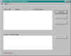

Display Stalled Async Requests,
com.tymeac.client.jframe.TyStalled
This frame class displays any stalled Asynchronous Requests
and provides a way of dealing with them.
The non-frame version of this class is TyStalledClient, below.
 (click to link to full image)
Elements
List -- This is a List of any stalled requests:
reason -- This is the reason why a request stalled. This may be
the result of a scheduling failure or an excessive time in the system.
See return codes.
See also the section on when requests may stall.
(Id) -- This is the Request Id returned as part of the original AR
request,
Tymeac AR(0000)[MilliTime, Id].
see Usage and TyReqStatus.
Entered -- The date and time entered into the system.
Function Name -- The Tymeac Function associated with the request.
Queues Not Responding -- This is a List of the names of the Tymeac
Queues that have not finished processing. When there is an Output Agent Queue, then
that Queue name is first in the list. The list is loaded with the Details Button, below.
Usually, after correcting the problem with the non-performing Queue and enabling all the Threads, the request will continue. However,
since the request has been in the system for an excessive length of time, the entry
remains, here, until finished. When necessary, the Purge Button can purge the
request.
Buttons
REFRESH -- Refreshes the display.
ReSCHD OA -- Re-schedule the output agent queue.
When a request stalls due to the Output Agent Queue failing
scheduling, then this button may re-schedule the Output Agent Queue.
This button is only valid when all normal Queues finished processing and the Output
Agent is the only remaining Queue in the request.
Why the original schedule failed must be investigated and settled.
A failure to schedule due to insufficient Wait List Entries is one common reason for a
failure to schedule. Adding more entries or waiting
until the Queue is under a lesser load may solve this problem.
PURGE -- Select a line[s] and press. The stalled request[s] is
purged from the Tymeac System.
DETAILS -- Select a line and press. This loads the List of Queues
not Responding.
Message Block at bottom : -- This is an information message:
Connection failure -- The RMI connection failed or the Tymeac Server returned an
invalid message.
No requests are stalled -- As stated.
Make a selection -- Select a line for Details or Purge.
Selected item is no longer active -- The request finished or was purged by
another. Use the Refresh Button.
Use refresh button first -- Use the Refresh button before the others.
Selected item is not an Output Agent -- The request does not contain an Output
Agent Queue.
All normal Queues have not finished -- The request has pending normal Queues.
Output Agent is a bad Queue -- This is an internal error. The Output Agent
Queue is damaged.
Output Agent is already scheduled -- The request is in a Wait List on the Output
Agent Queue.
Scheduling failed with return code=(nnnn) -- See the list of reasons why the request failed.
com.tymeac.client.TyStalledClient (JavaDoc)
This is the Non-GUI equivalent of the GUI Class, above. An example of how to use this
class is: com.tymeac.demo.TyDemoClient_Stalled.java in the
<TymeacHome>source/com/tymeac/demo directory.
Constructor 1 -- has no arguments. This is for the RMI Server. The constructor gets a
new instance of a Tymeac internal class that is similar to TySvrComm
Constructor 2-- is for the internal server. The single argument is the Tymeac
Server Interface, TymeacInterface.
Instance Methods --
public String[] detail(long id) {
Returns:
String[]
When the first element = "N287", then none are stalled.
Otherwise, a list of the Stalled requests in the above List format.
Parameters: the stalled request id number.
public int purge(long id) {
Returns:
2 completed. Do a refresh to see the new List
Parameters: he stalled request id number.
public String[] refresh() {
Returns:
String[]
When the first element = "N287", then none are stalled.
Otherwise, a list of the Stalled requests in the above List format.
Parameters: the queue name
public int reSchd(long id) {
Returns:
0 OK
1 Selected item no longer stalled
2 Selected item is not an Output Agent
3 All normal Queues have not finished
4 Output Agent is a bad Queue
5 Output Agent is already scheduled
6 Nothing selected
7 Selected item was not found
8 Invalid ID on selected item
10 Communication error
11 No Requests Stalled
Other = Scheduling failed with this return code
Parameters: the stalled request id number.
| {kind=link}